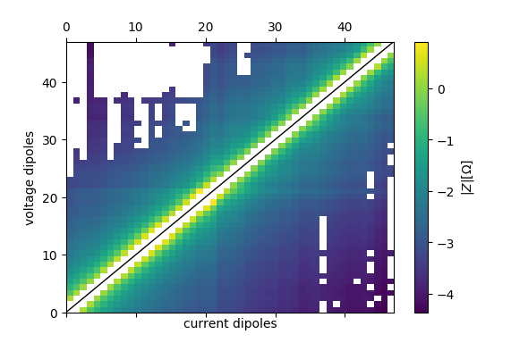
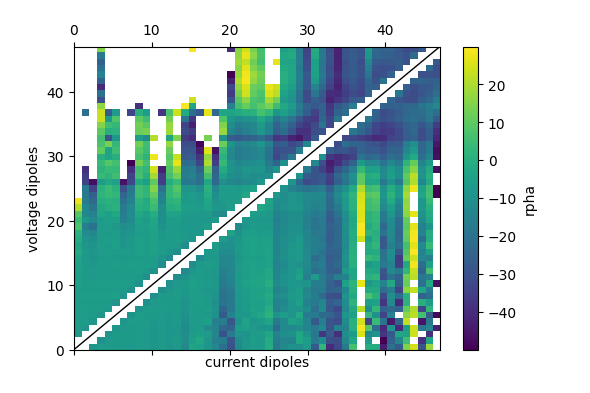

Note
Click here to download the full example code
Importing Radic SIP256c data¶
Warning
The SIP256c importer is incredibly slow at the moment. Sorry for that.
create the data container
import the data
seit.import_sip256c('data_Radic_256c/dipdip_skip0_nor.res')
seit.import_sip256c('data_Radic_256c/dipdip_skip0_rec.res', reciprocal=49)
Out:
number of readings 47
keys [0, 1, 2, 3, 4, 5, 6, 7, 8, 9, 10, 11, 12, 13, 14, 15, 16, 17, 18, 19, 20, 21, 22, 23, 24, 25, 26, 27, 28, 29, 30, 31, 32, 33, 34, 35, 36, 37, 38, 39, 40, 41, 42, 43, 44, 45, 46]
generating ids
assigning ids
Summary:
a b m n
count 17296.000000 17296.000000 17296.000000 17296.000000
mean 16.000000 17.000000 34.000000 33.000000
std 10.954768 10.954768 10.954768 10.954768
min 1.000000 2.000000 4.000000 3.000000
25% 7.000000 8.000000 26.000000 25.000000
50% 14.000000 15.000000 36.000000 35.000000
75% 24.000000 25.000000 43.000000 42.000000
max 46.000000 47.000000 49.000000 48.000000
number of readings 47
keys [0, 1, 2, 3, 4, 5, 6, 7, 8, 9, 10, 11, 12, 13, 14, 15, 16, 17, 18, 19, 20, 21, 22, 23, 24, 25, 26, 27, 28, 29, 30, 31, 32, 33, 34, 35, 36, 37, 38, 39, 40, 41, 42, 43, 44, 45, 46]
generating ids
assigning ids
Summary:
a b m n
count 17296.000000 17296.000000 17296.000000 17296.000000
mean 34.000000 33.000000 16.000000 17.000000
std 10.954768 10.954768 10.954768 10.954768
min 4.000000 3.000000 1.000000 2.000000
25% 26.000000 25.000000 7.000000 8.000000
50% 36.000000 35.000000 14.000000 15.000000
75% 43.000000 42.000000 24.000000 25.000000
max 49.000000 48.000000 46.000000 47.000000
compute K factors (electrode spacing was 3 m)
import reda.utils.geometric_factors as redaK
K = redaK.compute_K_analytical(seit.data, spacing=3)
redaK.apply_K(seit.data, K)
| a | b | m | n | I | U | date | dr | drho | drpha | frequency | k | r | rho | rpha | time | with_calib | id | norrec | rdiff | rphadiff | rho_a | sigma_a | |
|---|---|---|---|---|---|---|---|---|---|---|---|---|---|---|---|---|---|---|---|---|---|---|---|
| 0 | 1 | 2 | 4 | 3 | 114.03921 | 0.080038 | 09.06.2016 | 0.007672 | 0.00439 | 0.043982 | 0.03906 | 56.548668 | 1.747590 | 4.35150 | -4.114614 | 13:55:55 | nc | 135 | nor | 0.020546 | -0.101404 | 98.823907 | 0.010119 |
| 1 | 4 | 3 | 1 | 2 | 124.61780 | 0.088490 | 10.06.2016 | 0.005976 | 0.00338 | 0.033685 | 0.03906 | 56.548668 | 1.768137 | 4.40266 | -4.216017 | 16:59:07 | nc | 135 | rec | 0.020546 | -0.101404 | 99.985766 | 0.010001 |
| 2 | 1 | 2 | 5 | 4 | 114.03921 | 0.003014 | 09.06.2016 | 0.003727 | 0.01289 | 0.128980 | 0.03906 | 226.194671 | 0.289123 | 3.16301 | -3.258006 | 13:55:55 | nc | 179 | nor | -0.000811 | 0.136834 | 65.398172 | 0.015291 |
| 3 | 5 | 4 | 1 | 2 | 124.89605 | 0.003292 | 10.06.2016 | 0.000776 | 0.00269 | 0.026878 | 0.03906 | 226.194671 | 0.288313 | 3.15414 | -3.121172 | 16:50:00 | nc | 179 | rec | -0.000811 | 0.136834 | 65.214777 | 0.015334 |
| 92 | 2 | 3 | 5 | 4 | 124.50752 | 0.071875 | 09.06.2016 | 0.013855 | 0.00800 | 0.079936 | 0.03906 | 56.548668 | 1.731830 | 5.19549 | -5.190260 | 14:04:59 | nc | 180 | nor | 0.002413 | 0.052011 | 97.932679 | 0.010211 |
| ... | ... | ... | ... | ... | ... | ... | ... | ... | ... | ... | ... | ... | ... | ... | ... | ... | ... | ... | ... | ... | ... | ... | ... |
| 34585 | 49 | 48 | 44 | 45 | 25.36068 | 0.000061 | 10.06.2016 | 0.002889 | 0.04718 | 0.471762 | 1000.00000 | 565.486678 | 0.061233 | 1.55655 | -47.552543 | 10:01:20 | nc | 2159 | rec | -0.000273 | 10.720336 | 34.626605 | 0.028880 |
| 34588 | 45 | 46 | 49 | 48 | 44.45877 | 0.000891 | 09.06.2016 | 0.002308 | 0.01053 | 0.105243 | 1000.00000 | 226.194671 | 0.219183 | 2.39786 | -64.560253 | 20:26:49 | nc | 2160 | nor | -0.000217 | 21.121451 | 49.577985 | 0.020170 |
| 34589 | 49 | 48 | 45 | 46 | 25.36068 | 0.000508 | 10.06.2016 | 0.002181 | 0.00996 | 0.099658 | 1000.00000 | 226.194671 | 0.218966 | 2.39549 | -43.438802 | 10:01:20 | nc | 2160 | rec | -0.000217 | 21.121451 | 49.528983 | 0.020190 |
| 34590 | 46 | 47 | 49 | 48 | 49.41489 | 0.018629 | 09.06.2016 | 0.007153 | 0.00762 | 0.076096 | 1000.00000 | 56.548668 | 0.938707 | 2.33738 | 42.262101 | 20:35:55 | nc | 2161 | nor | -0.001265 | 5.689250 | 53.082621 | 0.018839 |
| 34591 | 49 | 48 | 46 | 47 | 25.36068 | 0.009548 | 10.06.2016 | 0.003694 | 0.00394 | 0.039444 | 1000.00000 | 56.548668 | 0.937442 | 2.33423 | 47.951350 | 10:01:20 | nc | 2161 | rec | -0.001265 | 5.689250 | 53.011083 | 0.018864 |
34592 rows × 23 columns
fix signs/pi-shifts caused by negative geometric factors
import reda.utils.fix_sign_with_K as redaFixK
redaFixK.fix_sign_with_K(seit.data)
| a | b | m | n | I | U | date | dr | drho | drpha | frequency | k | r | rho | rpha | time | with_calib | id | norrec | rdiff | rphadiff | rho_a | sigma_a | |
|---|---|---|---|---|---|---|---|---|---|---|---|---|---|---|---|---|---|---|---|---|---|---|---|
| 0 | 1 | 2 | 4 | 3 | 114.03921 | 0.080038 | 09.06.2016 | 0.007672 | 0.00439 | 0.043982 | 0.03906 | 56.548668 | 1.747590 | 4.35150 | -4.114614 | 13:55:55 | nc | 135 | nor | 0.020546 | -0.101404 | 98.823907 | 0.010119 |
| 1 | 4 | 3 | 1 | 2 | 124.61780 | 0.088490 | 10.06.2016 | 0.005976 | 0.00338 | 0.033685 | 0.03906 | 56.548668 | 1.768137 | 4.40266 | -4.216017 | 16:59:07 | nc | 135 | rec | 0.020546 | -0.101404 | 99.985766 | 0.010001 |
| 2 | 1 | 2 | 5 | 4 | 114.03921 | 0.003014 | 09.06.2016 | 0.003727 | 0.01289 | 0.128980 | 0.03906 | 226.194671 | 0.289123 | 3.16301 | -3.258006 | 13:55:55 | nc | 179 | nor | -0.000811 | 0.136834 | 65.398172 | 0.015291 |
| 3 | 5 | 4 | 1 | 2 | 124.89605 | 0.003292 | 10.06.2016 | 0.000776 | 0.00269 | 0.026878 | 0.03906 | 226.194671 | 0.288313 | 3.15414 | -3.121172 | 16:50:00 | nc | 179 | rec | -0.000811 | 0.136834 | 65.214777 | 0.015334 |
| 92 | 2 | 3 | 5 | 4 | 124.50752 | 0.071875 | 09.06.2016 | 0.013855 | 0.00800 | 0.079936 | 0.03906 | 56.548668 | 1.731830 | 5.19549 | -5.190260 | 14:04:59 | nc | 180 | nor | 0.002413 | 0.052011 | 97.932679 | 0.010211 |
| ... | ... | ... | ... | ... | ... | ... | ... | ... | ... | ... | ... | ... | ... | ... | ... | ... | ... | ... | ... | ... | ... | ... | ... |
| 34585 | 49 | 48 | 44 | 45 | 25.36068 | 0.000061 | 10.06.2016 | 0.002889 | 0.04718 | 0.471762 | 1000.00000 | 565.486678 | 0.061233 | 1.55655 | -47.552543 | 10:01:20 | nc | 2159 | rec | -0.000273 | 10.720336 | 34.626605 | 0.028880 |
| 34588 | 45 | 46 | 49 | 48 | 44.45877 | 0.000891 | 09.06.2016 | 0.002308 | 0.01053 | 0.105243 | 1000.00000 | 226.194671 | 0.219183 | 2.39786 | -64.560253 | 20:26:49 | nc | 2160 | nor | -0.000217 | 21.121451 | 49.577985 | 0.020170 |
| 34589 | 49 | 48 | 45 | 46 | 25.36068 | 0.000508 | 10.06.2016 | 0.002181 | 0.00996 | 0.099658 | 1000.00000 | 226.194671 | 0.218966 | 2.39549 | -43.438802 | 10:01:20 | nc | 2160 | rec | -0.000217 | 21.121451 | 49.528983 | 0.020190 |
| 34590 | 46 | 47 | 49 | 48 | 49.41489 | 0.018629 | 09.06.2016 | 0.007153 | 0.00762 | 0.076096 | 1000.00000 | 56.548668 | 0.938707 | 2.33738 | 42.262101 | 20:35:55 | nc | 2161 | nor | -0.001265 | 5.689250 | 53.082621 | 0.018839 |
| 34591 | 49 | 48 | 46 | 47 | 25.36068 | 0.009548 | 10.06.2016 | 0.003694 | 0.00394 | 0.039444 | 1000.00000 | 56.548668 | 0.937442 | 2.33423 | 47.951350 | 10:01:20 | nc | 2161 | rec | -0.001265 | 5.689250 | 53.011083 | 0.018864 |
34592 rows × 23 columns
Plot histograms of raw data
# TODO
filter the data a bit
seit.query('r > 0')
seit.query('rpha > -50 and rpha < 30')
group the data into frequencies
g = seit.data.groupby('frequency')
Plot pseudosection for 10 Hz
import reda.plotters.pseudoplots as PS
data_10hz = g.get_group(10)
fig, ax, cb = PS.plot_pseudosection_type2(
data_10hz, column='r', log10=True)
fig, ax, cb = PS.plot_pseudosection_type2(
data_10hz, column='rpha')
- 
- 
Plot pseudosections of all frequencies
import reda.plotters.pseudoplots as PS
import pylab as plt
with reda.CreateEnterDirectory('output_radic'):
fig, axes = plt.subplots(
7, 2,
figsize=(15 / 2.54, 25 / 2.54),
sharex=True, sharey=True
)
for ax, (key, item) in zip(axes.flat, g):
fig, ax, cb = PS.plot_pseudosection_type2(
item, ax=ax, column='r', log10=True)
ax.set_title('f: {} Hz'.format(key))
fig.subplots_adjust(
hspace=1,
wspace=0.5,
right=0.9,
top=0.95,
)
fig.savefig('pseudosections_radic.pdf')
plotting of SIP/EIS spectra is still somewhat cumbersome, but will be improved in the future
import reda.eis.plots as eis_plot
import numpy as np
subdata = seit.data.query(
'a == 1 and b == 2 and m == 5 and n == 4'
).sort_values('frequency')
# determine the norrec-id of this spectrum
nr_id = subdata['id'].iloc[0]
subdata_rec = seit.data.query(
'id == {} and norrec=="rec"'.format(nr_id)
).sort_values('frequency')
spectrum_nor = eis_plot.sip_response(
frequencies=subdata['frequency'].values,
rcomplex=subdata['r'] * np.exp(1j * subdata['rpha'] / 1000)
)
spectrum_rec = eis_plot.sip_response(
frequencies=subdata_rec['frequency'].values,
rcomplex=subdata_rec['r'] * np.exp(1j * subdata_rec['rpha'] / 1000)
)
with reda.CreateEnterDirectory('output_radic'):
spectrum_nor.plot('spectrum.pdf', reciprocal=spectrum_rec, return_fig=True)
Total running time of the script: ( 0 minutes 35.023 seconds)